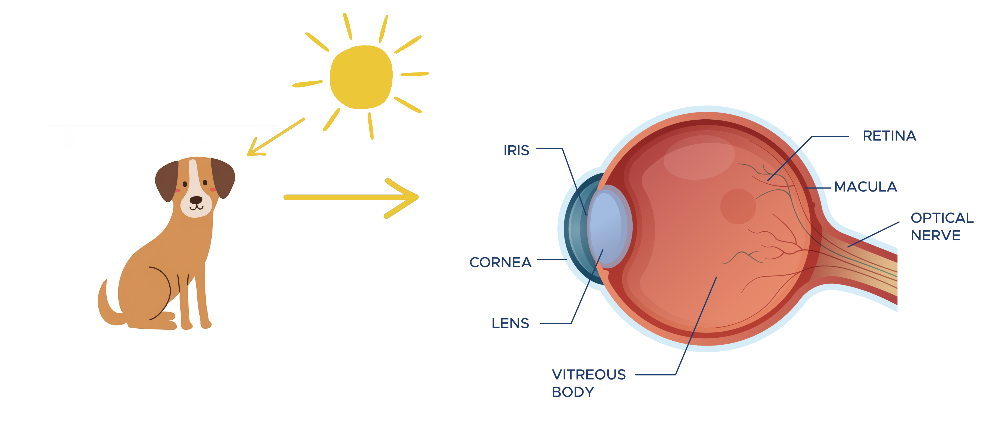

When light hits an object, like a dog, it bounces off the object and travels into our eyes. The light first passes through a clear layer called the cornea, which helps focus it. Next, the light goes through the pupil, which controls how much light enters. The retina at the back of the eye then receives the light, where special sensors called rods and cones detect colors and shapes.
Our brain then works like a puzzle solver, turning the light into information about color, shape, movement, and detail, helping us understand what we're seeing!
This is how we can see but what about computers? Well, like we have eyes, computers have sensors
